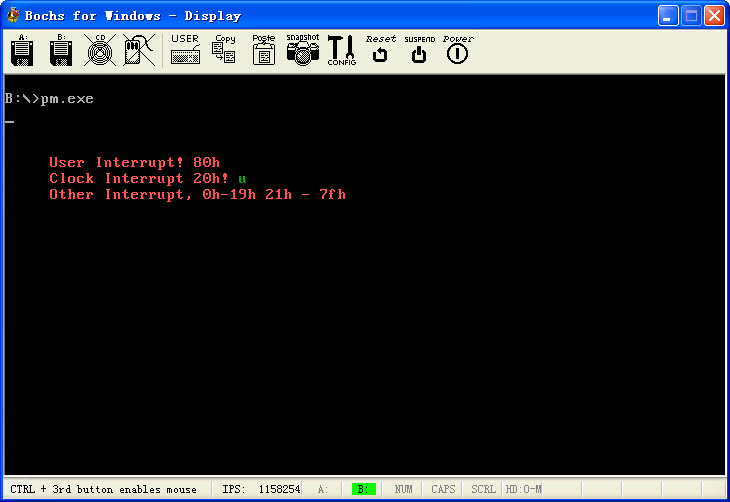

保护模式7:中断处理
文章目录
在实模式下写一个中断程序是比较简单的, DOS也直接由中断给调用, 要替换一个中断也是比较简单的. 但是一到保护模式的话, 中断就比较复杂了. 要处理的事情比较多…
首先实模式下的中断和异常都是一个概念, 但是保护模式下, 异常和中断分开了. 中断一般使用中断门, 还有陷阱门, 在写Dos下的程序经常会调用一些中断, 就是int xxx那种, 但是保护模式把这个叫自陷. 还有中断里面还带任务切换, 这个搞上那就更加复杂了. 权限什么的.复杂的很..
另外还有个蛋疼的问题, 外部中断需要重新设置, 通过8259A, BIOS初始化的时候, 已经给我们初始化了8259A, IRQ0-IRQ7被设置为对应中断08h-0Fh, 这个和保护模式下向量号08h-0Fh已经被CPU占用, 所以我们需要重新设置, 主从8259A这个东西, 说实话如果不写保护模式真没搞过, 不过现在写保护模式程序, 想要开中断那么必须设置8259A, 才了解了下, 于渊那书上也说的不清楚, 对于从保护模式退到实模式的代码, 也没有说清楚, 在Bochs上跑也有问题. 倒.
这个8259A的话, 叫做可编程中断控制器, 这个蛋疼的东西还是两片组成的, 但是分成主从两片. 要设置必须向相应的端口写入特定的ICW,主8259A对应的端口地址是20h和21h, 从8259A对应的端口地址是A0H和A1H, ICW共有4个, 每一个都具有特定格式的字节, 要了解这个的具体细节就需要参考其他资料了. 这里就不细说了. 我照搬于渊写了, 要操作端口必须按照这个套路来了..
往端口20h(主片)或A0H(从片)写入ICW1
往端口21h(主片)或A1H(从片)写入ICW2
往端口21h(主片)或A1H(从片)写入ICW3
往端口21h(主片)或A1H(从片)写入ICW4
必须按照这个套路来, 顺序不能够乱. 在写ICW2的时候就涉及中断向量号的对应, 就是这里了, 换成自己想替换的就OK, 参考下面的代码时注意观察.
说完8259A的话, 要写一个简单的搞搞中断的话也就不是太麻烦了. 看代码吧, 有图有真相
这个代码的话, 演示了一个自定义中断80h, 然后演示了时钟中断, 在时钟中断处理完毕的时候记得发送EOI给8259A, 我刚开始就忘记了这句, 然后怎么也不能够连续的处理时钟中断, 具体来说这句的意思就是告诉8259A中断我们已经处理完了.
在时钟中断中还调用了10h号中断, 看看中断嵌中断的效果.. 具体看代码的相关演示..
http://www.joenchen.com/JoenTools/Protect5.rar

;============================================================================ ;保护模式下使用中断IDT ;编译选项请参见 makefile TAB = 8 ;============================================================================ .686p Include pm.inc option casemap:none Stack_Len = 1024 ;堆栈大小 ;—————————————————————————- GdtSeg Segment use32 ;全局描述符 GDT label byte Dummy: Descriptor 0, 0, 0 ; 空描述符 Normal: Descriptor 0, 0ffffh, DA_DRW ; Normal 描述符 g_VideoDesc: Descriptor 0B8000h, 0ffffh, DA_DRW ; 显存首地址 g_Code16Desc: Descriptor 0, 0ffffh, DA_C ;非一致代码段16位 g_DataDesc: Descriptor 0, DataLen-1, DA_DRWA ;数据段 g_StackDesc: Descriptor 0, Stack_Len-1, DA_DRWA ;堆栈段 g_IdtCode32Desc: Descriptor 0,IdtCode32SegLen-1, DA_CR or DA_32 ; 非一致代码段, 32 ;—————————————————————————- NormalSelector equ Normal - GDT ;规范段选择子 Code16Selector equ g_Code16Desc - GDT ;代码段选择子 g_DataSelector equ g_DataDesc - GDT ;数据段 g_VideoSelector equ g_VideoDesc - GDT ;视频段选择子 g_StackSelector equ g_StackDesc - GDT ;堆栈段 g_IdtCodeSelector equ g_IdtCode32Desc - GDT ;中断代码段 ;—————————————————————————- GDTLen equ $ - GDT ;GDT长度 _GDT_Ptr word GDTLen-1 ;VGDT dword 0 _IDT_Ptr word 0 ;VIDT dword 0 _RegSp word ? ;用于保存SS:SP _RegSs word ? GdtSeg Ends ;============================================================================ StackSeg Segment use32 ;堆栈段 byte Stack_Len dup (0) StackSeg Ends ;============================================================================ DataSeg Segment use32 ;数据段
SzMessage byte “Other Interrupt, 0h-19h 21h - 7fh”, 0 SzInterrupt byte “Clock Interrupt 20h!”, 0 SzUser byte “User Interrupt! 80h”, 0 _byImreg byte 0 ;中断屏蔽寄存器(IMREG)值 _dwFlags dword 0 ;标记 DataLen equ $ - DataSeg ;数据段长度 DataSeg Ends ;============================================================================ IdtCode32Seg Segment use32 ;IDT中断代码段
SpuriousHandlerEntry equ $ - IdtCode32Seg;其他类型的中断 SpuriousHandler Proc mov ah, 0Ch ; 0000: 黑底 1100: 红字 mov esi, offset SzMessage mov edi, (80 * 7 + 5) * 2 ; 屏幕第 7 行, 第 5 列。 mov ecx, sizeof SzMessage ;显示的字符串
@@: lodsb stosw loop @b iretd SpuriousHandler Endp ;—————————————————————————- ClockHandlerEntry equ $ - IdtCode32Seg;时钟中断 ClockHandler Proc
mov ah, 0Ch ; 0000: 黑底 1100: 红字
mov esi, offset SzInterrupt
mov edi, (80 \* 6 + 5) \* 2 ; 屏幕第 6 行, 第 5 列。
mov ecx, sizeof SzInterrupt ;显示的字符串
dec dword ptr ds:\[\_dwFlags\]
@@: lodsb stosw loop @b
mov eax, dword ptr ds:\[\_dwFlags\] ;显示随机数
stosw
shr eax, 16
stosw
int 10h ;调用自定义中断
mov al, 20h
out 20h, al ;发送EOI, 通知中断控制器中断处理完毕
iretd
ClockHandler Endp ;—————————————————————————- UserIntHandlerEntry equ $ - IdtCode32Seg;80H用户自己的中断 UserIntHandler Proc mov ah, 0Ch ; 0000: 黑底 1100: 红字 mov esi, offset SzUser mov edi, (80 * 5 + 5) * 2 ; 屏幕第 5 行, 第 5 列。 mov ecx, sizeof SzUser ;显示的字符串 @@: lodsb stosw loop @b iretd UserIntHandler Endp ;—————————————————————————- IdtCode32SegLen equ $ - IdtCode32Seg ;段长度 IdtCode32Seg Ends ;============================================================================ IdtSeg Segment use32 ;中断描述符 IDT label byte
; 门 目标选择子, 偏移, DCount, 属性 repeat 32 Gate g_IdtCodeSelector, SpuriousHandlerEntry, 0, DA_386IGate endm ;时钟中断20h Gate g_IdtCodeSelector, ClockHandlerEntry, 0, DA_386IGate repeat 95 Gate g_IdtCodeSelector, SpuriousHandlerEntry, 0, DA_386IGate endm ;自定义中断80h Gate g_IdtCodeSelector, UserIntHandlerEntry, 0, DA_386IGate IDTLen equ $ - IDT ;段长度 IdtSeg Ends ;============================================================================ Code16Seg Segment use16
_Delay Proc ;延时过程 nop nop nop nop ret _Delay Endp ;—————————————————————————- ;设置8259A中断控制器 从20h–>28h ;—————————————————————————- _SetProcteMode8259A Proc uses es
in al, 21h
mov byte ptr ds:\[\_byImreg\], al ; 保存中断屏蔽寄存器(IMREG)值
mov al, 011h
out 020h, al ; 主8259, ICW1.
call \_Delay
out 0A0h, al ; 从8259, ICW1.
call \_Delay
mov al, 020h ; IRQ0 对应中断向量 0x20
out 021h, al ; 主8259, ICW2.
call \_Delay
mov al, 028h ; IRQ8 对应中断向量 0x28
out 0A1h, al ; 从8259, ICW2.
call \_Delay
mov al, 004h ; IR2 对应从8259
out 021h, al ; 主8259, ICW3.
call \_Delay
mov al, 002h ; 对应主8259的 IR2
out 0A1h, al ; 从8259, ICW3.
call \_Delay
mov al, 001h
out 021h, al ; 主8259, ICW4.
call \_Delay
out 0A1h, al ; 从8259, ICW4.
call \_Delay
;—————————————————————————- ;需要开启某个中断只需要将某一位复位即可 ;—————————————————————————- ;mov al, 11111111b ; 屏蔽主8259所有中断 mov al, 11111110b ; 仅仅开启定时器中断 out 021h, al ; 主8259, OCW1. call _Delay
mov al, 11111111b ; 屏蔽从8259所有中断
out 0A1h, al ; 从8259, OCW1.
call \_Delay
ret
_SetProcteMode8259A Endp ;—————————————————————————- ;设置8259A符合实模式要求, 这个有点问题, 再Bochs里面跑不了 ;—————————————————————————- _SetRealmode8259A Proc
mov al, 017h
out 020h, al ; 主8259, ICW1.
call \_Delay
mov al, 008h ; IRQ0 对应中断向量 0x8
out 021h, al ; 主8259, ICW2.
call \_Delay
mov al, 001h
out 021h, al ; 主8259, ICW4.
call \_Delay
mov al, byte ptr ds:\[\_byImreg\] ;恢复中断屏蔽寄存器(IMREG)的原值
out 021h, al
call \_Delay
ret
_SetRealmode8259A Endp ;—————————————————————————- _GoToProtect Proc ;返回实模式 xchg bx, bx call _SetRealmode8259A ;设置实模式中断
mov ax, NormalSelector
mov fs, ax ;规范选择子
mov es, ax
mov ds, ax
mov ss, ax
mov eax, cr0 ;关PE位, 进入实模式
and al, 0feh
mov cr0, eax
;刷新段选择子缓冲区, 退回实模式
Jmp16 <seg StartCode >, < offset \_RetProtect >
_GoToProtect Endp ;—————————————————————————- _ProtectEntry Proc
mov ax, g\_DataSelector
mov ds, ax ; 数据段选择子
mov es, ax
mov ax, g\_VideoSelector
mov gs, ax ; 视频段选择子
mov es, ax
mov ax, g\_StackSelector
mov ss, ax ; 堆栈段选择子
mov esp, Stack\_Len
mov eax, 2000
mov dword ptr ds:\[\_dwFlags\],eax ; 初始化中断20次
call \_SetProcteMode8259A ;初始化8259A中断控制器
int 080h ;没有开中断就可用调用中断门
sti
@@: cmp dword ptr ds:[_dwFlags], 0 jnz @b
call \_GoToProtect ;返回实模式
_ProtectEntry Endp Code16Seg Ends ;============================================================================ StartCode Segment use16
_InitGdt Proc uses es ;初始化全局描述符表 local _Idt_Ptr:fword
xor eax, eax
mov ax, GdtSeg
mov es, ax ;es-->全局描述符表
;—————————————————————————- shl eax, 4 add eax, offset GDT mov dword ptr es:[_GDT_Ptr+2], eax ;初始化VGDT描述符 ;—————————————————————————- xor eax, eax mov ax, IdtSeg shl eax, 4 add eax, offset IDT mov word ptr ss:[_Idt_Ptr], IDTLen - 1 ;VIDT限长 mov dword ptr ss:[_Idt_Ptr+2], eax ;初始化VIDT描述符 ;—————————————————————————- xor eax, eax mov ax, Code16Seg ;初始化十六位的代码段 shl eax, 4 mov word ptr es:[g_Code16Desc+2], ax ;段基址低位 shr eax, 16 mov byte ptr es:[g_Code16Desc+4], al ;段基址高地址低位 mov byte ptr es:[g_Code16Desc+7], ah ;段基址高地址高位 ;—————————————————————————- xor eax, eax ;数据段 mov ax, DataSeg shl eax, 4 mov word ptr es:[g_DataSelector+2], ax shr eax, 16 mov byte ptr es:[g_DataSelector+4], al mov byte ptr es:[g_DataSelector+7], ah ;—————————————————————————- xor eax, eax ;中断代码段 mov ax, IdtCode32Seg shl eax, 4 mov word ptr es:[g_IdtCode32Desc+2], ax shr eax, 16 mov byte ptr es:[g_IdtCode32Desc+4], al mov byte ptr es:[g_IdtCode32Desc+7], ah ;—————————————————————————- xor eax, eax ;堆栈段 mov ax, StackSeg shl eax, 4 mov word ptr es:[g_StackDesc+2], ax shr eax, 16 mov byte ptr es:[g_StackDesc+4], al mov byte ptr es:[g_StackDesc+7], ah ;—————————————————————————- sidt fword ptr es:[_IDT_Ptr] ;保存IDT lgdt fword ptr es:[_GDT_Ptr] ;装载GDT lidt fword ptr ss:[_Idt_Ptr] ;装载IDT ret _InitGdt Endp ;============================================================================ Jmain Proc
mov ax, GdtSeg
mov ds, ax
call \_InitGdt ;装载GDT和IDT
\_EnableA20 ;关中断开A20地址线
cli
mov eax, cr0
or eax, 1
mov cr0, eax ;开启分段, 进入保护模式
;—————————————————————————- Jmp16 Code16Selector, <offset _ProtectEntry> ;跳入保护模式 Jmain Endp ;============================================================================ _RetProtect Proc ;返回保护模式
mov ax, GdtSeg
mov ds, ax
mov ax, ds:\[ \_RegSs \] ;恢复SS:SP
mov ss, ax
mov ax, ds:\[ \_RegSp \]
mov sp, ax
lidt fword ptr ds:\[\_IDT\_Ptr\] ;恢复IDT
\_DisableA20 ;关A20地址线, 开中断
sti
mov ax, 4c00h
int 21h
_RetProtect Endp StartCode Ends
End Jmain
文章作者 忆杰
上次更新 2011-09-21